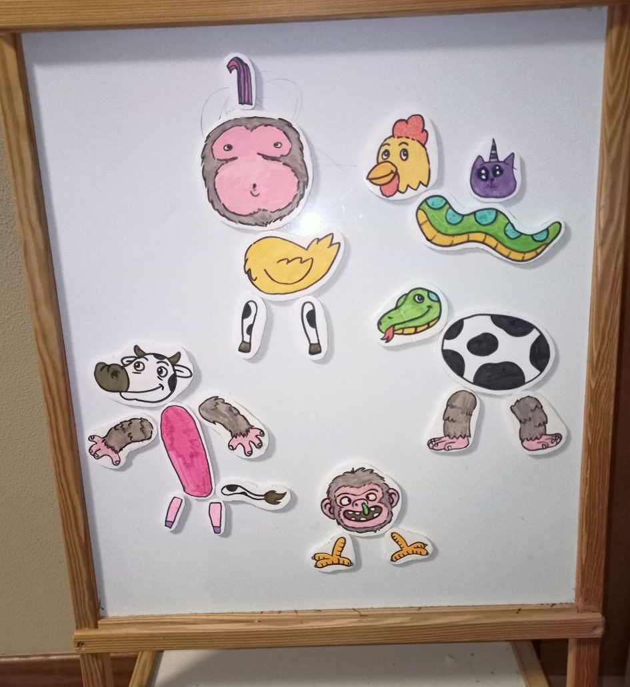

Nov 26, 2013
I recently bought some tiny tiny neodym magnets for my hand carved chess set, and after deciding I was not going to magnet the pieces, I wondered what I could do with them.
Well, "fridge magnets" was the most obvious answer. To quickly prototype and make, I made them with foam board and regular color markers.
My older daughter made the Cat Unicorn
wim, the game platform I'm working on with my pals at Embark, is a creative multiplayer environment where players -among many other things- can create new stuff by kitbashing. This is, combining separate and diverse pieces together to form a new thing. With this idea in mind, I designed these magnets to be separate and reusable parts of animals:
Kids had some laughts playing with them 🙂. If they keep playing for a couple days more I'll think of making more pieces.